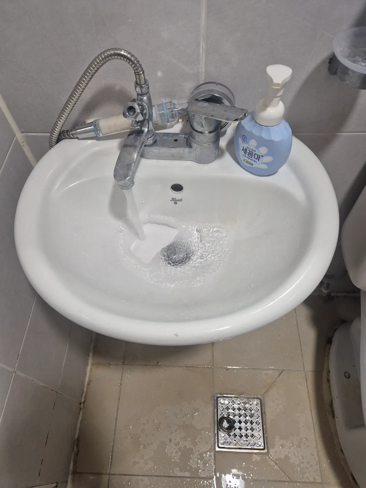
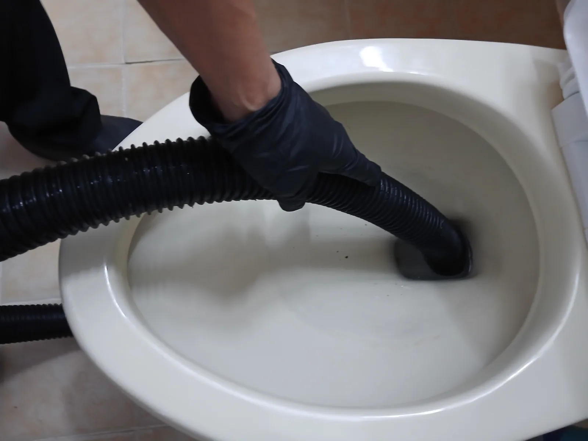

용산구 이촌동 아파트 공용배관막힘, 고압세척 후 집수정 연결 배관 파손 보수공사
이촌동의 한 아파트에서 여러 세대가 사용하는 메인 배관을 고압세척으로 통수한 뒤, 점검 과정에서 확인된 집수정 연결 배관의 파손 구간만 철거하고 새 배관으로 보수했습니다.
서울특별시 FIELD NOTES
실제 출동 기록이 있는 지역을 중심으로 변기·싱크대·하수구·배관 작업 사례를 연결합니다.
이촌동의 한 아파트에서 여러 세대가 사용하는 메인 배관을 고압세척으로 통수한 뒤, 점검 과정에서 확인된 집수정 연결 배관의 파손 구간만 철거하고 새 배관으로 보수했습니다.

강남구 신사동 에어비앤비 숙소에서 화장실 하수구 배수가 막힌 현장을 긴급 방문해 트랩 구조와 배관 내부를 점검하고, 배관 내시경과 전문 석션 작업으로 오염물과 이물질을 제거해 예약 손님 입실 전 정상 배수 상태를 확보했습니다.

다음 날 중요한 면접 준비를 앞두고 한밤중 세면대가 심하게 막힌 노량진동 현장에서 전문 석션 작업으로 머리카락·비누찌꺼기와 끈적한 오염물을 제거해 배수를 정상화했습니다.

이문동 변기막힘 현장에서 석션 작업만으로 해결되지 않는 막힘을 확인하고, 변기를 탈거한 뒤 전문 에어건 작업으로 내부 이물질을 제거해 정상적인 배수 상태를 확보했습니다.

송파구 석촌동 변기막힘 증상을 단순 변기 문제로 끝내지 않고 실내 관통작업과 배관 내시경검사로 배관 상태를 추적한 뒤 외부 오수관까지 점검해 고압세척으로 대응한 현장입니다.

오전 8시경 동작구 대방동 변기막힘 긴급 요청에 신속하게 출동해 석션 작업과 변기탈거를 진행하고, 내부에 걸려 있던 청소포를 제거한 뒤 Milwaukee AirSnake 에어건 작업과 통수 확인으로 마무리했습니다.

중구 필동 하수구막힘 현장에서 배관 내부를 꽉 막고 있던 대형 스펀지와 물티슈 등 이물질을 확인하고, 배관 내시경·스프링 관통기·RIDGID 플렉스샤프트·고압세척 장비를 복합 운용해 약 8시간에 걸쳐 막힘을 해결했습니다.

강동구 천호동 아파트 싱크대 배수 불량 현장에 신속하게 출동해 배관 내시경으로 막힘 구간을 확인하고 석션과 샤프트를 복합 운용해 배수 흐름을 확보했습니다.

관악구 봉천동 변기막힘 현장에 신속하게 출동해 변기를 탈거하고 내부 막힘 상태를 확인한 뒤 에어건과 석션 작업으로 통수 상태를 정상화했습니다.

강남구 신사동 욕실 하수구막힘 현장에 신속하게 출동해 배관 내시경으로 막힘 상태를 확인하고, 샤프트와 석션을 병행해 배관 내부 이물질을 제거하고 정상적인 배수 흐름을 확보했습니다.

강동구 길동에서 물이 내려가지 않던 변기를 탈거하고 에어건으로 내부 트랩에 걸린 전자담배를 제거해 정상 배수를 복구했습니다.

강동구 암사동 아파트에서 발생한 심한 싱크대막힘을 샤프트로 1차 관통하고 고압세척을 진행해 배수관 내부의 기름때와 잔존 이물질을 제거했습니다.